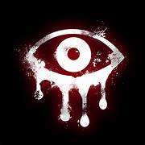

SYSTEM FAILURE .INC
“Anche nel silenzio delle macchine, qualcosa continua a cercare un significato che nessuno ha programmato.”
CHI SIAMO?
System Failure .inc nasce come realtà specializzata nello sviluppo di prodotti tecnologici e soluzioni innovative. Con il tempo, la nostra visione si è evoluta verso un nuovo obiettivo: trasformare tecnologia e creatività in esperienze horror immersive e coinvolgenti.
Oggi ci occupiamo dello sviluppo di progetti horror digitali, unendo atmosfera, design e sperimentazione per creare contenuti capaci di lasciare il segno. Crediamo nell’innovazione, nella cura dei dettagli e nella forza delle idee fuori dagli schemi. Perché, diciamolo, il mondo tech normale era già abbastanza inquietante di suo.
GLITCH REALITY
Non facciamo semplici esperienze horror: rompiamo la distinzione tra gioco e realtà. Ogni progetto di System Failure .inc è pensato come un “errore nel sistema”, un’interferenza che si infiltra tra schermo, suono e percezione. Messaggi che sembrano scritti per qualcun altro, ambienti che cambiano quando non li stai guardando, storie che non seguono mai una sola versione dei fatti.
Non è solo atmosfera: è interazione che non ti lascia mai davvero fuori. Quando pensi di aver capito cosa sta succedendo, il sistema ha già cambiato le regole.
PRODOTTI
I nostri prodotti sono frutto di anni di lavoro, dal mondo tech a quello... dell'horror.
Prodotti "TECH"
Tecnologia, sperimentazione e creatività si fondono per dare vita a prodotti fuori dagli schemi. Sviluppiamo sistemi, software ed esperienze digitali pensati per sorprendere, innovare e spingere oltre i limiti del normale utilizzo tecnologico. Perché un semplice programma può funzionare. Ma qualcosa di davvero memorabile deve anche lasciare una sensazione strana addosso.
Prodotti "HORROR"
Le nostre esperienze horror non si limitano a spaventare: sono progettate per confondere, coinvolgere e lasciare il segno. Ambientazioni disturbanti, segnali corrotti, storie nascoste e dettagli che cambiano sotto gli occhi del giocatore trasformano ogni progetto in qualcosa di vivo.
Non sai mai cosa sia reale, e spesso è proprio questo il problema.
